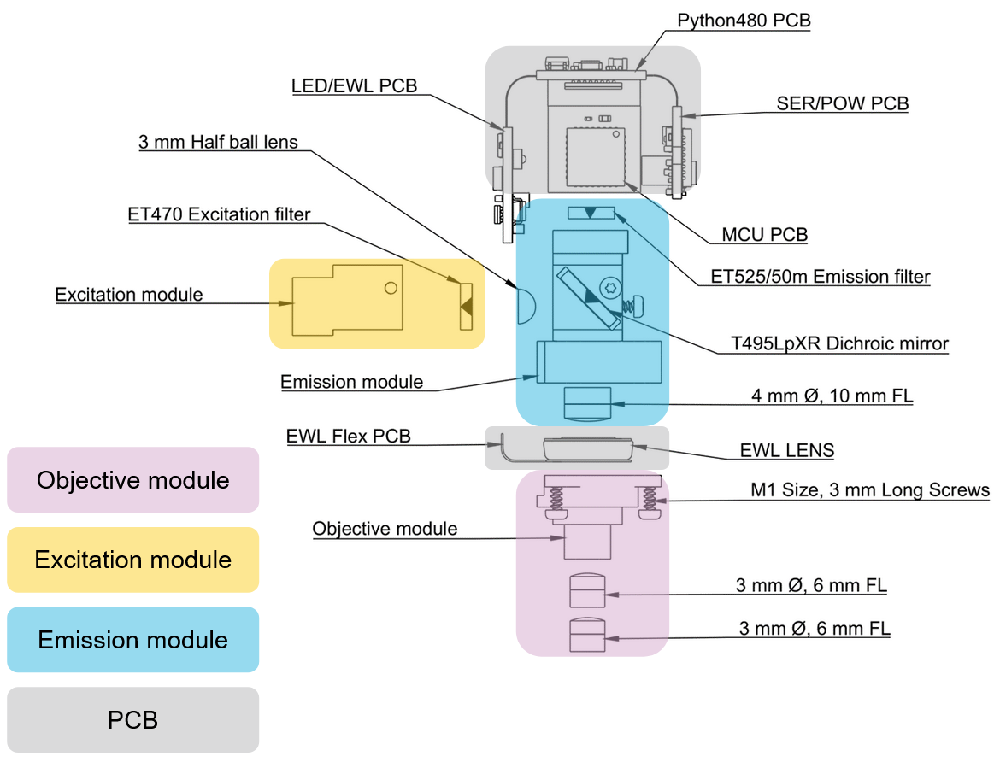

Assembly#
Note
Proceed to the Data Acquisition guide if your UCLA Miniscope v4/s is/are already assembled.
The UCLA Miniscope v4 can be thought of as comprised from four modules.
To contextualize the assembly process, a breakdown of each module is provided. For a broader overview of how the UCLA Miniscope v4 functions, refer to the UCLA Miniscope v4 Working Principle section of this documentation.
Todo
fix the images so that they’re more uniform?
Breakdowns of UCLA Miniscopes v4’s Modules
Mounts the excitation filter against the excitation light source which blocks wavelengths of light that could pollute the UCLA Miniscope v4’s sensor with undesired light not from the sample
Mounts a combination of off-the-shelf achromatic lenses which can be swapped out to adjust the the field-of-view/magnification, working distance, spatial resolution, and effective NA. These lenses:
Illuminate the sample with excitation light from the excitation light source
Collect emmision light from the sample and roughly collimates it into the excitation module
Mounts the emission filter against the sensor which blocks wavelengths of light that could pollute the UCLA Miniscope v4’s sensor with undesired light not from the sample
Mounts the dichroic mirror which reflects excitation light into the objective module and transmits emission light into the imaging sensor
Mounts 3mm half ball lens which alters the illumination profile at the imagining sample
Mounts 4mm , 10mm focal length lens to ___

Mounts the various electronics for controlling the sensor, ETL, LED and communication with the data acquisition hardware
The following assembly instructions are divided into distinct steps according to the UCLA Miniscope v4’s four modules in addition to a Preparation step and a Validate & Finish step.
Todo
fix the stuff under here
Warning
For the filters and dichroic, the coated surface faces the incoming light
The arrows on the diagram point towards the coated surface and you must keep to this orientation. The arrows on the side of the filter/dichroic should point towards the coated surface
The coated surface has a more opaque/mirror-like appearance than the uncoated surface. The uncoated surface through which you are able to see the edges of the cube of glass
Avoid working on metal tables
Use electrostatic gloves
When assembling and using the Miniscope, please take care with the printed circuit board (PCB). The circuitry is exposed on the outside of the scope and can be damaged by electrostatic charges. Prevent this damage by never placing the scope on metal or other conductive surfaces and wearing electrostatic-safe gloves if possible.